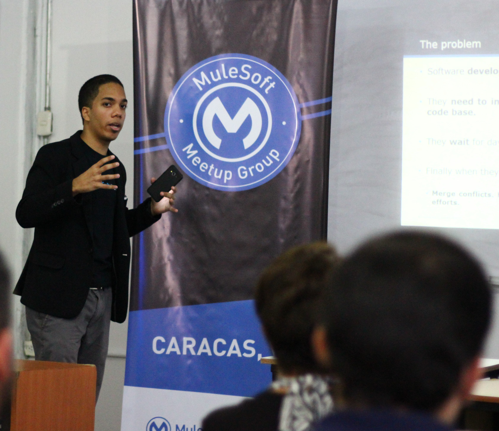

Fernando Silva
Software Engineer
Integration Solution Architect
Born and raised in Caracas, Venezuela, in a middle to low class family that taught me to work honestly for what I want and be strictly correct in the process. That mindset has stayed with me ever since, shaping how I approach everything I do. I love comedy, I'm always working on becoming a better version of myself, and I'm fascinated by aviation.
I'm a Software Engineer who specializes in IT integrations using MuleSoft and Workato. In practice, that means I'm the techie who helps companies connect their enterprise applications in a structured way, building reusable, purposeful APIs that unlock data from systems, compose it into processes, or deliver it as an experience.
With over 10 years of experience, I've worked remotely as a contractor based in Venezuela, delivering integration projects across North America, Central America, South America, and Asia. Along the way, I earned a degree in Software Engineering and built my career starting with MuleSoft before branching into Workato as well.
To me, finding your passion means finding the hard problems you're willing to keep wrestling with, even when they turn out tougher than expected — the kind of frustration you're happy to sit with because you know you'll learn from it. I believe I've found mine in software engineering, and I try to bring honesty and integrity to everything I do.
-
Solutions Architect
Design, oversee, and lead MuleSoft and Workato integration projects for healthcare, banking, and fintech clients across the USA.
-
Senior MuleSoft Developer & Architect
Designed, developed, and supported integration solutions using MuleSoft (Mule 4.x), while mentoring team members.
-
Senior MuleSoft Developer
Led analysis, solution design, and new API standards for SaaS CRM, legal, HR, and ERP integration projects.
-
MuleSoft Technical Lead
Led design, development, and support of integration solutions using MuleSoft (Mule 4.x).
-
MuleSoft Developer
Contributed to integration solutions using MuleSoft Anypoint (Mule 3.x) across projects in the USA, Mexico, Panama, Venezuela, and Myanmar.
- Anypoint Platform Operations: Runtime Fabric2020
- Anypoint Platform Development: DataWeave 2.02020
- Microsoft Certified: Azure Fundamentals2021
- MuleSoft Certified Developer - Level 1 (x2, Renewed)2021
- MuleSoft Certified Platform Architect - Level 1 (x2, Renewed)2022
- MuleSoft Certified Integration Architect - Level 1 (x3, Renewed)2023
- Workato Automation Pro I Certificate2024
- Workato Automation Pro II Certificate2024
- Workato Automation Pro III Certificate2024
- SpanishNative
- EnglishB2

I founded and led the Caracas MuleSoft Meetup group, and went on to speak at MuleSoft meetups across Venezuela, Mexico, Panama, and Peru — sharing integration practices with other cities' developer communities.